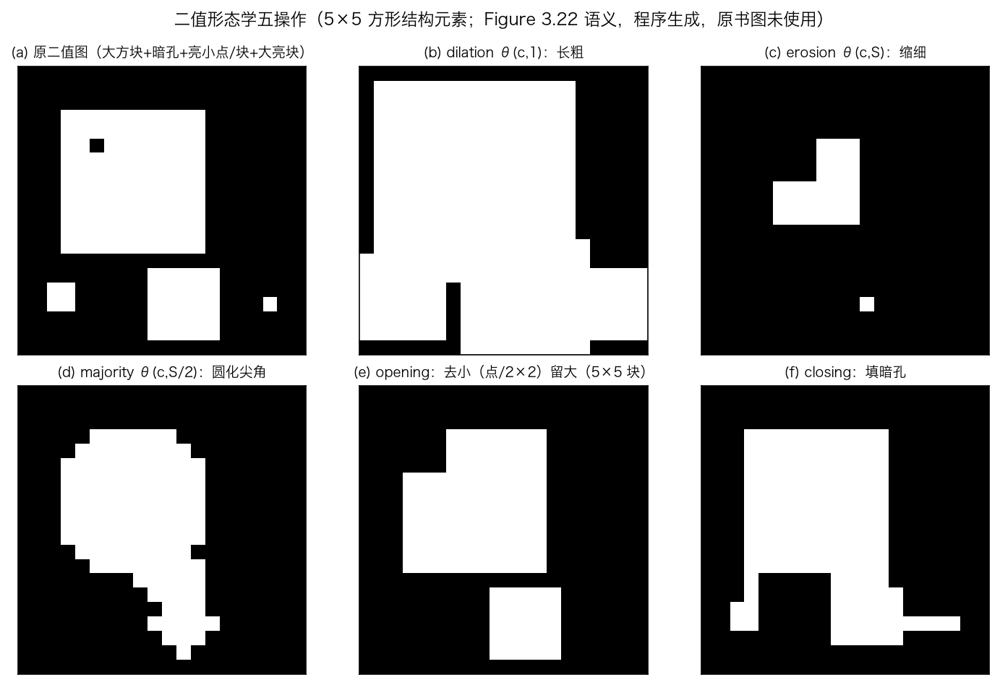
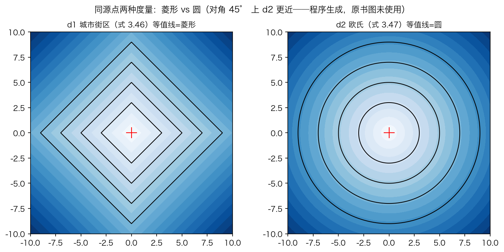
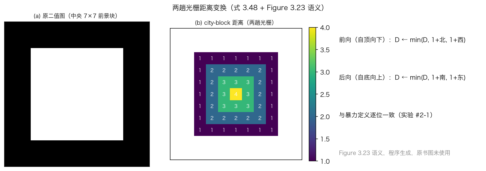
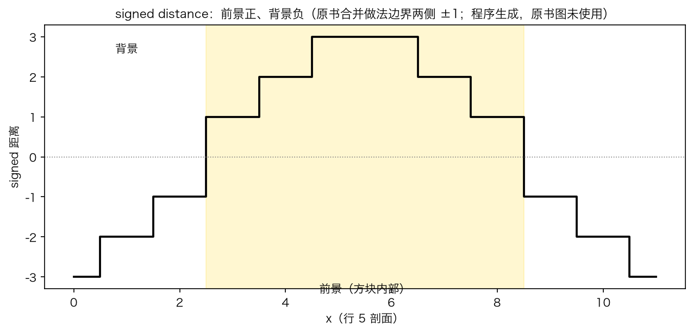
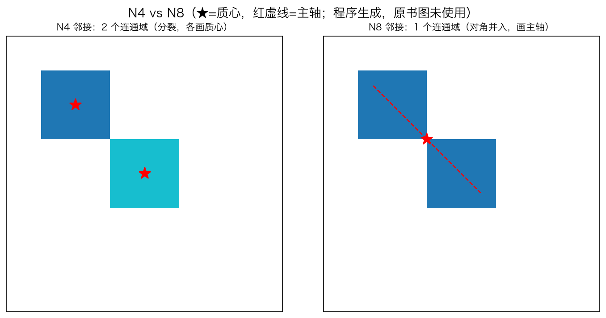

第 3 章 · 二值图像处理
二值图：阈值、形态学、距离、连通域
二值图来自一次阈值：f 不小于 t 记 1。
形态学五个操作：膨胀、腐蚀、多数票、开、闭。
距离变换两趟光栅，量到零像素的距离。
连通域连片，报面积、周长、质心、二阶矩。
依据：原书第 138–142 页
本集三站
阈值化：f≥t 记 1
形态学：五个操作
距离变换：两趟光栅
连通域：N4/N8 与统计
正课第十八集
01 / 10
书上第 138 页 · 阈值与形态学
一道阈值，五种修法
阈值：灰度不小于 t 记 1，否则记 0。
用途：扫描文档转黑白，再做 OCR。
形态学改变二值物体的形状。
图 3.22 六格，结构元素 5×5 方形。
依据：原书第 138 页

五操作六格：原图、膨胀、腐蚀、多数票、开、闭，结构元素 5×5 方形｜程序生成，未用教材或论文原图
正课第十八集
02 / 10
书上第 138–139 页 · 统一框架
一个框架管五个：卷积计数再卡阈值
结构元素扫过图像，数窗口里的 1，得 c。
再对 c 卡阈值，就得到各种操作。
膨胀 θ(c,1)，腐蚀 θ(c,S)，多数票 θ(c,S/2)。
开=先腐蚀再膨胀，闭=先膨胀再腐蚀。
依据：原书第 138–139 页
c = f ⊗ s
S=结构元素像素数；dilate=θ(c,1)，erode=θ(c,S)，majority=θ(c,S/2)；open=dilate(erode)，close=erode(dilate)
正课第十八集
03 / 10
书上第 138–139 页 · 效果与图注
长粗、缩细、去小、填孔
膨胀让 1 的物体长粗，腐蚀让它缩细。
开、闭保住大区域和光滑边界。
多数票把尖锐的角轻微磨圆。
开运算去不掉不够宽的点。
依据：原书第 138–139 页 + 本集实验
同一组六格：多数票磨圆尖角，开运算去小亮点，闭运算填暗孔，5×5 大亮块保留｜程序生成，未用教材或论文原图
正课第十八集
04 / 10
书上第 139–140 页 · 距离变换
到最近的零像素有多远
两趟光栅预计算到曲线或点集的距离。
用途：水平集、倒角匹配、羽化、最近点对齐。
d1 街区 |k|+|l|，d2 欧氏 √(k²+l²)。
D 取到最近零像素的距离。
依据：原书第 139–140 页

两种度量的等值线：街区距离是菱形，欧氏距离是圆｜程序生成，未用教材或论文原图
正课第十八集
05 / 10
书上第 140 页 · 两趟光栅
先传北西，再传南东
第一趟自顶向下：取 1+北邻或西邻的最小值。
第二趟自底向上：再并入 1+南邻或东邻。
两趟结果与逐点定义一致。
方向要与邻居配套，配错就出错。
依据：原书第 140 页 + 本集实验

两趟光栅：中央 7×7 方块的距离由边界向内 1、2、3、4｜程序生成，未用教材或论文原图
正课第十八集
06 / 10
书上第 140 页 · 欧氏距离
标量不够，要存向量
只存最小标量距离，两趟不够。
每个像素存到边界的 Δx、Δy。
比较用平方距离，搜索区域要更大。
实验：标量 5.83，真值约 5.39。
依据：原书第 140 页 + 本集实验
同一张等值线图：菱形与圆对照，用来看欧氏距离的差别｜程序生成，未用教材或论文原图
正课第十八集
07 / 10
书上第 140–141 页 · 别名与推广
草火、倒角、骨架、带符号
草火变换：像素值是火烧到的时刻。
倒角：像木工和工业设计里的倒角。
距离场的脊线是骨架，也叫中轴变换。
带符号距离：前景正、背景负，边界 ±1。
依据：原书第 140–141 页 + 本集实验

带符号距离的行剖面：前景为正，背景为负，边界两侧是 +1 和 −1｜程序生成，未用教材或论文原图
正课第十八集
08 / 10
书上第 141–142 页 · 连通域
连成片，再报统计量
同值相邻的像素连成一个连通域。
N4 看上下左右，N8 再加斜对角。
用途：找字母、找细胞、算面积。
统计：面积、周长、质心、二阶矩。
依据：原书第 141–142 页 + 本集实验

斜对角接触的两块：N4 分成两个域，N8 连成一个域，星号为质心｜程序生成，未用教材或论文原图
正课第十八集
09 / 10
收束 · 下一集
三件事：修形、量距、连片
形态学：卷积计数再卡阈值，开去亮点、闭填暗孔。
距离变换：到零像素的距离，欧氏要存向量。
连通域：N4 严、N8 宽，二阶矩给长短轴。
下一集：书上第 142 页起，傅里叶变换。
依据：原书第 138–142 页
本集三站
形态学：五个操作
距离变换：两趟+向量
连通域：N4/N8+四统计
正课第十八集
10 / 10